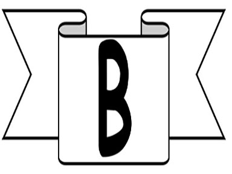

The Balloonatic Asylum was formed in 2012 by Krista H. Elium. She was originally a high-energy physicist who decided to give up that lucrative career to spend more time at home with her eight Maine Coon cats and two goldfish. One day while working with liquid helium cooling giant magnets near absolute zero at a proton-smashing super-collider, she said, "I'm getting really cold and my sweater bill is astronomical! think I'll dump the physics, and just focus on my true love... room-temperature Helium!" On that day a new business was born bringing Helium gas and joy to the masses.
